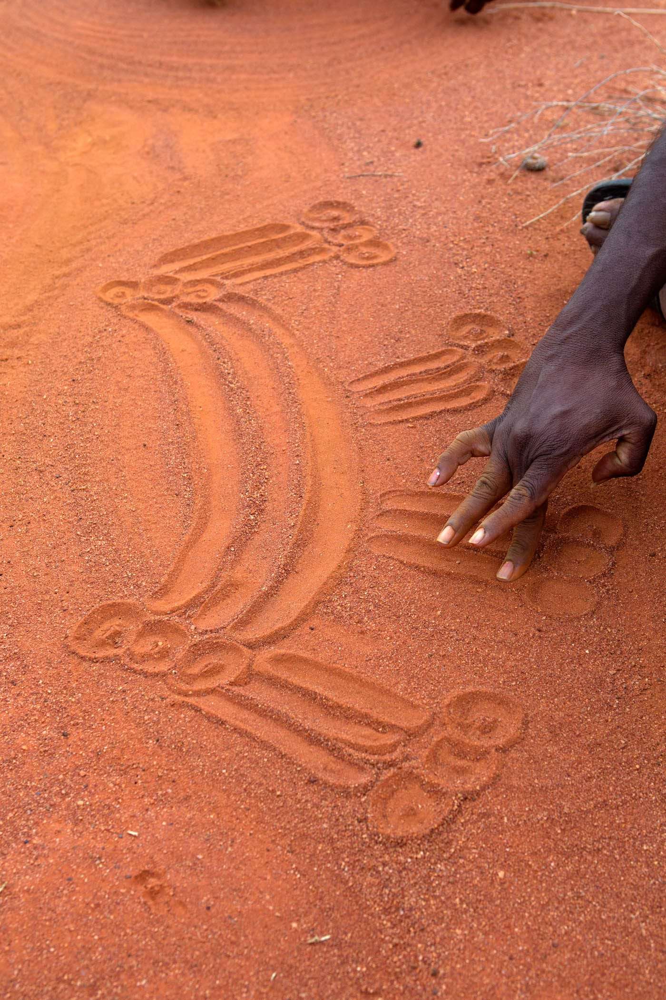
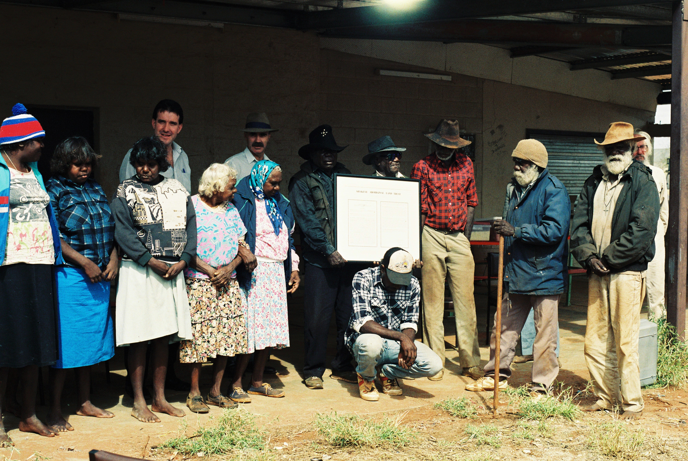
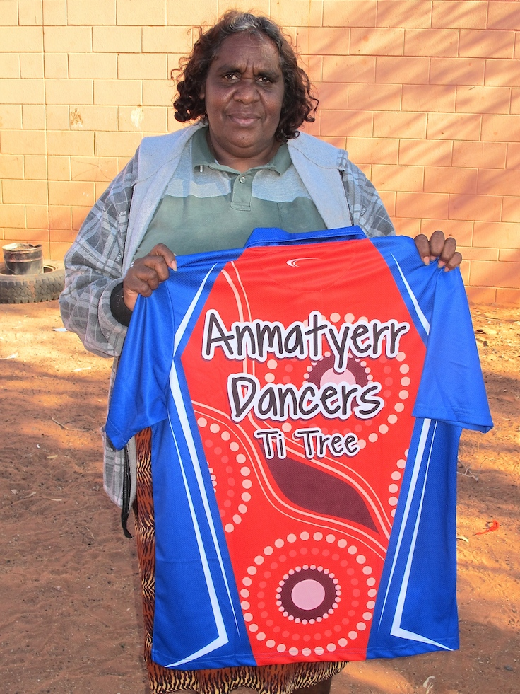
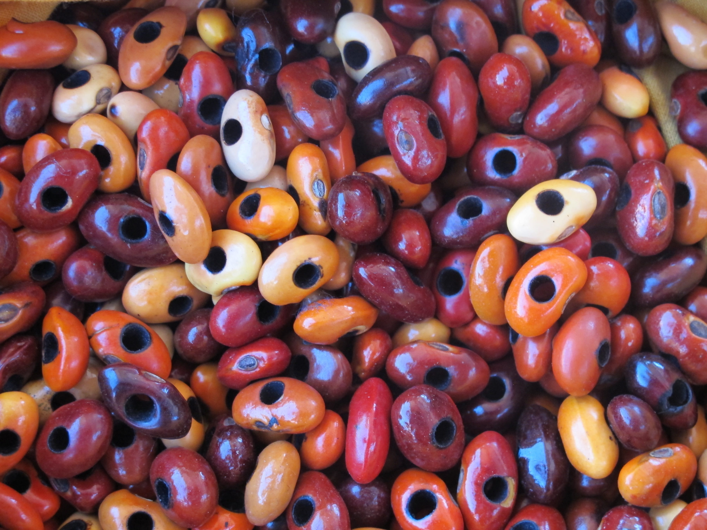
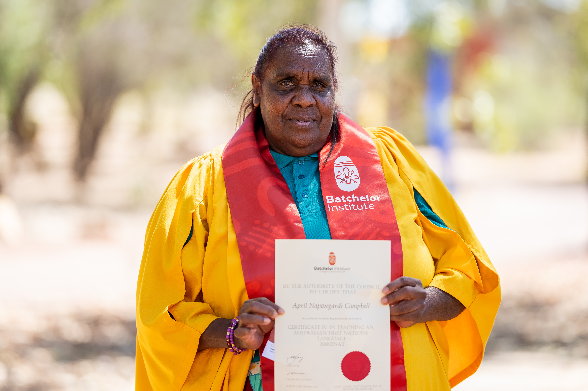
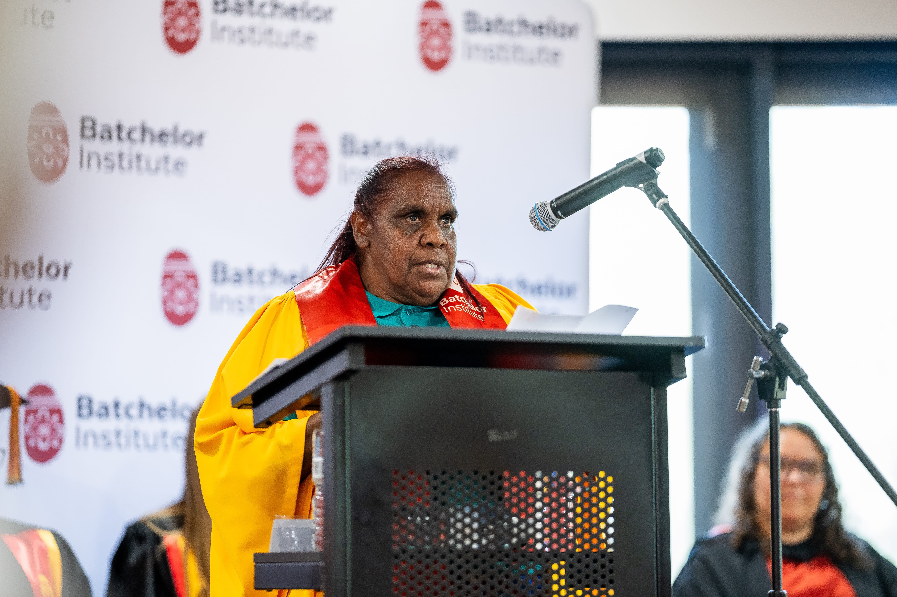

Born at Nthwerey
Today I am going to tell a story about when I was little. I was born in 1967 at Nthwerey, in the creek – not in a hospital. I grew up at Ti Tree station. I used to go hunting with my grandparents, my mother's mother and mother's father. They taught me how to hunt for alangkw (bush bananas), nyematy (witchetty grubs) and yerramp (honey ants). I used to watch my granny and my grandfather hunting for kangaroo. I watched carefully. We went camping out and I used to camp with them.

Drawing a tyepety ‘sand story’ of April’s body design of her country, Angenty. DATE
David Hancock
Learning about Country
My granny used to tell me sand stories on the ground. She used to tell me Dreaming stories and stories about women going hunting. I watched really carefully as she told the stories.
Then I used to watch her drawing ceremonial designs. And she told me, “That’s how you have to do it, this is my Country.” My rtartart (mother’s father) told me, “You can draw snakes, or water”. They showed me the soakages and other water sources. All the family went out camping together – my mother came too. We went on foot – we didn't have any vehicles. And on other occasions we went out with donkeys – my grandparents would put the swags and water on the donkey. And they’d put me up on the donkey as well. My rtartart would pull the donkey with a rope. We would travel out hunting from Nthwerey to Pwerray, digging up honeyants.
After that we went back home, with the meat, desert raisins, bush onions and bush bananas. We stayed at home. After that the Welfare mob came – that's when school started. A small bus came to the station to pick us kids up. The station manager took us to the station house. We had biscuits and milo for breakfast. We went on the bus to school. There was a caravan in the park at Ti Tree Well – that’s where I went to school. Then they started to build a new school. Then I shifted to the new school, to the east of the park. That’s where I went to school.
Going to boarding school
When I was bigger, I went to boarding school at Yirara (in Alice Springs). Lots of us went from Ti Tree, but I was the only one who stayed – the others got homesick and came home. I was doing nothing and then Mick Arundel, who was a friend of my father, asked me, “Do you want a job? Do you want to work in the school as a cleaner? You can make yourself some pocket money”. He had heard that I was back from school and doing nothing. I got a job cleaning the school, then Mick told my story to some of the whitefeller bosses. “She’s a good worker. She always comes to work. She needs a proper job”. Then the Education Department whitefeller said, “There’s one job there as a liason officer. You can work for proper money, a proper job.” Then they put me in that job. When the funding ran out, they put me in for teaching.
Ti Tree Land Claim
I saw people dancing for the Land Claim at Nthurey, all painted up. They were talking about their country. They were talking about getting the country back, so that it would be Aboriginal land.

Ti Tree Land Claim hand back. Peggy Ngal, Megandie Ngal, Alexander Downer, Warren Snowdon, Jack Clancy, Ti Tree Station
Teaching
Now I am the arts teacher and the co-ordinator of language and culture at Ti Tree School. I teach the kids to read and write Anmatyerr, and I organize trips. I teach the children painting and I organise them to dance with the elders. I paint at home and I make things like necklaces to sell. I learnt to do all these things from my granny.

Shirt for Anmatyerr Dancers. Design April Campbell.
Jennifer Green

Inernt ‘bean tree seeds’ ready for making necklaces.
Jennifer Green
Read and write both ways
I want to see the Anmatyerr children reading and writing properly in Anmatyerr.
And then maybe they can be interpreters when the government comes here to hold big meetings. They can help our elders by interpreting what they are saying. I want to see that. And if they go a long way to boarding schools in the city, they will still hang on to that knowledge about reading and writing in Anmatyerr. They won’t lose their Anmatyerr language and only speak English. They will be able to read and write both ways. Their own language Anmatyerr, and English. Strong in both.
Learning Journey
FILM: AprilsLearningJourney

April Campbell, graduating with Certificate IV in Teaching an Australian First Nations Language, Batchelor Institute, 2025.
Angela Harrison

April Campbell giving the 2025 Batchelor Institute Graduation student response.
Angela Harrison